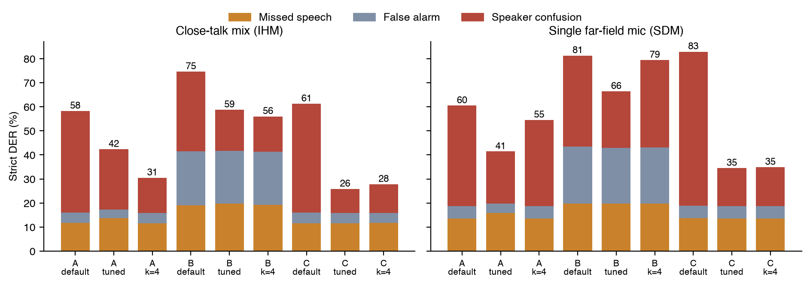
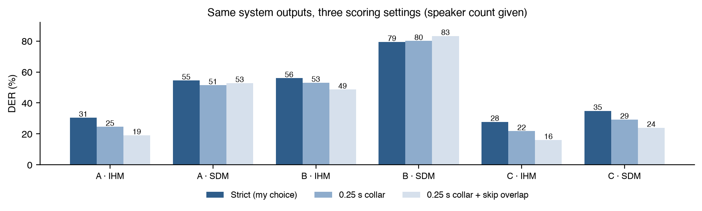

Designing a public leaderboard for speaker diarization
Anmol Adwani · November 2026
Short version. The leaderboard ranks systems on strict DER: no collar, overlapping speech scored, and the system is not told how many speakers there are. Each recording type (meetings, phone calls, clinics, video calls, broadcast, noisy field audio, code-switched speech) counts equally in the average. The hidden test set is about 52 hours, with references built from close-talk mics plus forced alignment and checked by a second annotator. A system is only ranked above another when a paired bootstrap says the gap is real. Otherwise they share a tier.
I also ran a small version of this on 3 public AMI meetings with 3 open pipelines (§6). That pilot changed two of my own decisions.
1. Purpose
The leaderboard has one job: help someone pick a diarization system for their audio. One overall number can't do that, because a system that is great on podcasts can fall apart on 8 kHz phone calls. So I designed it around the decisions people actually make:
Who
The decision they make
What they need from the board
Product / eng lead at a meeting-notes, call-analytics or medical-scribe company
Which API or model to build on (buy vs. self-host)
Score on their domain (filter), price per hour, latency, licence, and whether the gap to #2 is real
ML engineer already running a system
Is it worth switching or retraining? Where does mine fail?
Error breakdown (missed speech vs. false alarm vs. speaker confusion), overlap and short-turn scores, speaker-count accuracy
Vendor / model builder
What to fix next, and whether a release actually improved
Per-domain scores over time, version history, confidence intervals
Researcher
How a new method compares under strict, reproducible conditions
Exact scoring settings, public dev set, open scoring code
Procurement / non-technical buyer
Short-list 2–3 vendors to trial
Plain-language tiers ("these three are statistically tied") instead of a fake precise ranking
The last row shaped the design more than I expected. If two systems are 0.3 points apart with overlapping confidence intervals, showing them as "#3" and "#4" is misleading to exactly the person least able to tell. That is why rank tiers come up again in §5.
2. Models
2.1 Types of systems
Open-source, self-hosted, offline: pyannote, NVIDIA NeMo / Sortformer, DiariZen, 3D-Speaker. We run these on our own hardware.
Diarization-only commercial APIs: e.g. pyannoteAI. You send audio and get back speaker segments only.
Speech-to-text APIs that also label speakers: AssemblyAI, Deepgram, Speechmatics, AWS, Google, Azure, ElevenLabs, Rev, Gladia, OpenAI. These return words with speaker tags, not segments, so they need a conversion step (§2.3).
Streaming / live systems: streaming Sortformer, Nemotron-3-Diarization in low-latency mode, AssemblyAI / Speechmatics / Azure real-time. These are scored on a separate track, because comparing a system that sees 0.3 s of future audio with one that sees the whole file is not fair.
2.2 Named list for launch
I checked every row against the vendor's docs or model card in the week of 23 Nov 2026. Vendors rename models often: AssemblyAI renamed its models on 17 Nov, and OpenAI's diarize model is now marked deprecated. So this list gets re-checked right before each run, and the exact version string goes onto the leaderboard.
Self-hosted (weights are CC BY-NC, so research use only)
no
yes
7
Alibaba (ModelScope)
3D-Speaker diarization recipe (CAM++ embeddings)
Open source, offline
Self-hosted
no
optional
8
m-bain (open source)
WhisperX v3 (Whisper large-v3 + community-1)
Open source, ASR + speaker labels
Self-hosted
yes (min / max)
no (word-level)
9
AssemblyAI
assemblyai-stt-3-7 with speaker_labels=true
STT API + labels (also real-time)
API
yes
no
10
Deepgram
Nova-3 with diarize_model=v2
STT API + labels
API
no
no
11
Speechmatics
Batch STT, enhanced, diarization: "speaker"
STT API + labels (also real-time)
API
real-time only (max_speakers)
no
12
Amazon (AWS)
Amazon Transcribe, ShowSpeakerLabels
STT API + labels (also streaming)
API
yes (MaxSpeakerLabels ≤ 30)
no
13
Google Cloud
Speech-to-Text v2 chirp_3 + diarization_config
STT API + labels (batch only)
API (BatchRecognize)
min / max count
no
14
Microsoft
Azure AI Speech: Fast Transcription (diarization) and ConversationTranscriber (live)
STT API + labels (also real-time)
API
maxSpeakers
no
15
ElevenLabs
Scribe (v2 API id; v3 announced), diarize=true
STT API + labels
API
yes (≤ 32)
no
16
Rev
Rev.ai async, diarization_type=premium
STT API + labels
API
yes (some languages)
no
17
Gladia
Solaria STT, diarization: true
STT API + labels
API
yes
no
18
OpenAI
gpt-4o-transcribe-diarize (marked deprecated)
STT API + labels
API, diarized_json
no (known-speaker refs only)
no
Two things I didn't expect from this table. First, almost every STT API returns one speaker per word, so none of them can represent overlapping speech. They pay a structural penalty under any metric that scores overlap. I decided that is correct (§4.2), but the board has to show it clearly so it isn't hidden. Second, Gladia says its diarization runs on pyannoteAI. Some "different" systems share an engine, and the board should say so.
2.3 Keeping the comparison fair
These systems differ in what they take as input, what they return, and what knobs they expose. These are the rules I'd hold every system to:
Same audio bytes. Every system gets the same file: original sample rate, mono, lossless WAV/FLAC. Phone audio stays 8 kHz, because that is what a call-centre customer would send. We don't denoise or enhance anything.
Same tuning budget for everyone. APIs run with their documented defaults. For open-source systems, we tune the free parameters, like the clustering threshold, on the public dev set with one fixed procedure, because the pilot showed defaults can flip a ranking (§6.3). Any vendor may also submit one config tuned on dev, never on test. All configs are frozen and published.
Two tracks for the speaker-count question. The Blind track (primary) gives no count. The Hinted track gives the true count to systems that accept one. Systems without a hint parameter show "n/a" there and are not scored as zero.
One converter for word-level outputs. Words carrying the same speaker label are merged into a segment when the gap between them is under 0.5 s. Each segment runs from the first word's start to the last word's end. The converter is open-sourced, and I report how much DER it changes on a dev subset where we have both forms.
Language is given to everyone who needs it. STT systems need a language code. All systems get the same one, and auto-detect counts as a separate config.
Failures count. A timeout, API error or empty output scores as 100% missed speech for that file, and the failure count is published. Silently dropping files is how leaderboards flatter systems.
Same time window. All API systems run within the same 7 days, with the model/version string and date logged. APIs change behind the same name, so we re-run every quarter and on vendor request.
Separate tracks, not mixed ranks. Offline, Streaming (at fixed latency budgets of about 1 s and 2 s) and Transcript-aware (cpWER via MeetEval, for STT systems) are shown in separate tables.
Hidden test, zero retention. Test audio is never public. We use zero-retention or no-training options on every API, and rotate about 20% of the test set each quarter so nobody can overfit to it.
Same hardware for speed numbers. Self-hosted systems run on one fixed GPU type for the real-time factor. Speed is reported but not used for ranking.
3. Test data and the reference
3.1 What we would record or collect
Public sets are useful but mostly old, mostly English meetings, and probably already in many training sets. They go on a public dev set and a "classic benchmarks" tab. The ranked test set is new, consented audio that we record or license:
Domain
Speakers / file
Setting and devices
Hours (test)
Why it's there
In-person meetings
3–8
Conference rooms of different sizes; table-centre mic and laptop mic, plus a close-talk headset per person used only to build the reference
12
Biggest commercial use; far-field audio, overlap
Video calls
2–6
Zoom/Meet/Teams recordings, compressed codecs, laptop and earbud mics, people talking over each other with network lag
8
Most meeting-notes products actually see this
Phone / call centre
2–3
8 kHz narrowband, hold music, IVR prompts, agent with headset vs customer on a mobile in the street
10
Call analytics. Short turns, agent/customer voices that can sound similar
Clinical consults
2–4
Doctor, patient and sometimes a family member; phone on the desk; mostly role-played by actors from real scripts
6
Medical scribes; a mistake here changes who said what in a medical record
Broadcast / podcast / panels
2–10+
Studio and remote guests, background music, interruptions
6
Subtitles, media; many speakers
Noisy field
2–5
Café, car, street, kitchen with kids; phone mic held or in pocket
Speaker models shouldn't care about language. Often they do
Total
52 h
≈ 400 recordings, 5–45 min each
Speakers: about 700 unique people. Nobody appears in both dev and test. We balance gender and include ages from 18 to 70+, plus a deliberate set of hard pairs: same-gender, similar-age siblings or colleagues.
Accents: the English data is split roughly evenly across US, UK, Indian, Nigerian/Kenyan, Southeast Asian and Latin American English, plus non-native speakers.
Metadata on every file: domain, device, sample rate, number of speakers, overlap %, mean turn length, dominant-speaker share, SNR estimate, language(s). This drives the filters and lets the analysis go deeper than one number. At most 10% of files may have one speaker above 80% of the speech; the pilot showed why (§6.3, point 3).
Why ~52 hours: per-recording DER typically varies by roughly 8–10 points. With about 60 recordings per domain, the 95% CI on a domain's mean comes to about ±2 points, and paired differences between systems are tighter still. That is enough to separate systems that are really 1–2 points apart. Less data than this and most rankings would just be noise.
Consent and privacy: written consent for public benchmarking, no real patient data (actors), and personal details removed from what is said.
3.2 How the reference is built
Close-talk channels where possible. Every meeting and clinic participant also wears a headset or lapel mic. Only the mixed or far-field audio goes to systems; the per-person channels are just for building the reference. This is the AMI / CHiME idea, and it makes "who spoke when" much less ambiguous.
Verbatim transcript, then forced alignment. Professional transcribers write a verbatim transcript, backchannels included. Forced alignment on the close-talk channel then gives word-level times accurate to about 10–20 ms, and segments are built from words with a fixed rule: split on pauses ≥ 0.3 s. Machine-made boundaries this precise are what make a zero collar fair (§4.2).
Human pass on top. A trained annotator reviews it in a waveform/spectrogram tool and fixes speaker labels, alignment failures and missed speech. Where there is only one channel (phone, broadcast, field), annotation is fully manual and follows the same written guidelines.
Written guidelines that fix the boring-but-critical rules. "Mm-hm", "yeah" and short laughs with voicing count as speech. Coughs, breaths and lip smacks don't. Overlap is always annotated. Speech from a TV in the background is marked as "non-target" and excluded via the UEM, a file that lists which time regions get scored.
3.3 How we check the reference
Double annotation of 15% of files, chosen at random and stratified by domain. We compute DER between the two annotators, at collar 0, and publish it as the human agreement floor per domain. If a system scores near that floor, the board says "at human agreement" rather than claiming one is better.
Adjudication: a senior annotator resolves every disagreement longer than 0.5 s on double-annotated files, and the guidelines are updated when a pattern shows up.
Automatic checks: segments outside the file, overlapping segments from the same speaker, speaker count different from the metadata, a long silence with no label in a file with high SNR, and boundaries more than 1 s away from the forced-alignment boundary.
Disagreement mining, done blind: if the top systems all agree with each other but disagree with the reference in some region, that region gets re-checked by an annotator who doesn't see any system output. This catches reference errors without letting the systems define the truth.
Versioned references: every fix bumps the reference version, and the leaderboard re-scores everything, so old and new numbers are never mixed.
4. Metrics and scoring settings
4.1 Definitions in plain words
Primary metric: Diarization Error Rate (DER), macro-averaged over domains.
DER is the share of the reference speech time that the system got wrong. First, the system's anonymous labels ("spk0, spk1…") are matched one-to-one to the reference speakers in the way that gives the most overlap (the Hungarian algorithm). Then every bit of time that is wrong counts as one of three error types:
DER = (missed speech + false alarm speech + speaker confusion) / total reference speech time
Missed speech: someone was talking and the system said nobody was. In overlap, each missing extra speaker counts.
False alarm: the system said someone was talking when they weren't, e.g. noise or music.
Speaker confusion: speech was detected but given to the wrong person.
DER is pooled within each domain (summed time, not an average of file scores), and the 7 domain DERs are then averaged with equal weight. Without this, the domain with the most hours would decide the ranking.
Supporting metrics (shown, not used for ranking):
Metric
Plain words
Why it's on the board
Error breakdown (Miss / FA / Confusion)
The three DER parts on their own
Shows whether a system is bad at finding speech or at telling people apart, which are two different fixes
JER (Jaccard Error Rate)
Error computed per speaker and then averaged, so every speaker counts equally
DER is dominated by whoever talks most. JER shows if a quiet participant, like the patient, is lost
Speaker-count error
Mean |predicted − true number of speakers|, and % of files exactly right
Users see "Speaker 7" in a 4-person meeting as a broken product, even when DER looks fine
Overlap DER
DER computed only in regions where two or more people talk
The hardest part of the problem, and it is where single-label STT systems lose
Short-turn recall
% of reference turns shorter than 1 s where most of the turn is given to the right speaker
Backchannels ("mm-hm", "right") matter for meeting summaries and are easy to drop
Forgiving DER
DER with a 0.25 s collar per side and overlap skipped
Only so people can compare with older papers. Clearly labelled as not the ranking metric
cpWER / tcpWER (MeetEval)
Word error rate after matching speakers, with time constraints for tcpWER
For STT systems, the number that reflects "is the transcript attributed correctly"
Speed, latency, cost
Real-time factor on fixed GPU; for streaming, algorithmic latency; list price per audio hour
Most buying decisions are a DER-vs-cost trade-off
4.2 Scoring settings, and why
Setting
My choice
Reason
Collar
0 s (none)
The reference comes from forced alignment, so its boundaries are accurate to about 20 ms. A collar was originally there to forgive fuzzy human boundaries, and it doesn't come for free. In my pilot a 0.25 s/side collar quietly removed 21.9% of the scored speech, and that was mostly the short turns and turn changes, which are exactly the hard part.
Overlapping speech
Scored
Overlap is 17% of speech time in my pilot meetings, and a real meeting has it. Skipping it rewards systems for ignoring a problem users actually have. Single-label systems take a penalty here, and the board shows that penalty separately (Overlap DER) so it is understood, not hidden.
Number of speakers
Not given (Blind track ranks); Hinted track shown alongside
A call-analytics pipeline might know the count is 2, but a meeting tool usually doesn't. Ranking on the realistic case and showing the hinted case also tells users how much they'd gain from passing a hint. In my pilot, with default settings the hint cut DER by up to 48 points. With a properly tuned threshold the best system was within a point of the hinted score, which is itself useful to know.
Speech activity
System's own (no oracle VAD)
Systems are deployed with their own VAD, and missed speech and false alarms are real user-facing errors
Scored region (UEM)
Whole file minus annotated non-target regions
Keeps background TV/radio speech from counting as a false alarm or a miss
Averaging
Pooled per domain, then equal-weight across domains
Matches "how good is it for my type of audio"; no domain dominates
A detail that's easy to get wrong: pyannote.metrics' collar is the total width, while dscore's --collar is per side. So "dscore 0.25" equals "pyannote collar=0.5". I double-checked this while writing the pilot scorer, because it's an easy way to report a collar twice as big as you meant. The leaderboard will publish the exact command line next to every setting.
5. Evaluation process: raw audio to a published leaderboard
Collect and consent. Record or license audio, collect consent and metadata, and run privacy review.
Build the reference following §3.2, then QA it with double annotation, automatic checks and adjudication (§3.3). Freeze it as reference vN with a UEM per file.
Split. The public dev set (about 8 h, plus classic sets like AMI, VoxConverse and DIHARD) is released with references. The hidden test set (52 h) never leaves our storage. No speaker appears in both.
Register systems. For each one, record the exact model/version, config, track(s), hint support and licence, and freeze it.
Run. A harness sends identical audio to each system, with retries and timeouts. It logs version strings returned by APIs, wall-clock time and cost, and stores raw outputs untouched.
Normalise. Convert outputs to RTTM with the open converter; word-level outputs get the §2.3 rule. Validate the files: no negative durations, times within file length.
Score. Run pyannote.metrics as the main scorer and cross-check with dscore. The two must agree to within 0.01 points on every file, or the run is blocked. We compute all metrics per file and per domain.
Statistics. Paired bootstrap over recordings, stratified by domain, with 10,000 resamples. This gives a 95% CI on every score and on every pairwise difference.
Sanity review. A human looks at outliers (any file with DER > 60%, any system with failures) and at a sample of the worst errors. A bug in our converter looks exactly like a bad model.
Vendor preview. Each vendor sees its own per-domain scores for 5 working days to flag pipeline errors on our side. They never see the audio, and they can't veto.
Publish the leaderboard, the full methodology and the scoring code, plus a changelog.
Maintain. Re-run all APIs quarterly, rotate about 20% of the test set, and re-score everything when the reference version changes.
5.1 Deciding that one system really beats another
Bootstrap resampling is done over whole recordings, not minutes, because errors inside a recording are correlated (if the system mixes up two voices once, it keeps mixing them up). The pilot made this concrete; see §6.3, point 6.
It is paired: the same resampled recordings are used for both systems, which removes the "this sample just had easy files" noise.
Tiers, not raw ranks. Sort by DER. Starting from the top system, the next system joins the current tier if the 95% CI of their difference includes 0. Otherwise it starts a new tier. Holm correction applies across these adjacent comparisons. The board shows "Tier 1: A, B, C" before it shows any decimal places.
Practical threshold. Even a statistically real gap under 0.5 DER points is shown as "tied in practice", because users won't notice it.
Run-to-run check. Every API is run twice on 10% of the test set. If two runs of the same API differ by more than the gap between two systems, those systems are tied regardless of the bootstrap.
5.2 What sits next to each score
Next to each score: 95% CI · tier · Miss/FA/Confusion · JER · speaker-count error · overlap DER · per-domain DER (on hover) · exact model/version and run date · track and settings (hint yes/no) · real-time factor or latency · list price per hour · licence (open / commercial / non-commercial) · number of failed files · reference version. The leaderboard sketch shows how this fits on one screen without becoming a wall of numbers.
6. Pilot: a small version I actually ran
I wanted to know if my scoring choices actually matter on real audio, or if I was arguing about details. So I ran a small version end to end.
6.1 Exact setup
Audio
AMI test meetings IS1009a, TS3003a, EN2002b (4 speakers each). I scored the first 10 min of each, and used both the headset mix (IHM, close-talk) and a single far-field array mic (SDM). That's 1 hour of audio in total. The official AMI mirror returned HTTP 503, so I used the HF copy diarizers-community/ami.
Reference
Word-aligned "only_words" RTTMs. I checked they are identical to pyannote/AMI-diarization-setup (DER 0.0 between the two copies).
Systems
All three are built with sherpa-onnx 2.0.3 on CPU (Apple M-series, 4 threads), with min_duration_on=0.3 and min_duration_off=0.5. A = pyannote segmentation-3.0 + WeSpeaker ResNet34-LM embeddings (the pyannote 3.x recipe) B = Rev reverb-diarization-v1 segmentation + WeSpeaker ResNet34-LM C = pyannote segmentation-3.0 + NVIDIA TitaNet-small embeddings
Modes
(1) blind with the default clustering threshold 0.5; (2) blind with a threshold tuned on a held-out meeting, ES2004c, not in the test files (A/B 0.8, C 0.9); (3) speaker count given (k = 4)
6.2 Results (strict DER %, pooled over the 3 meetings)
System
IHM blind default
IHM blind tuned
IHM k=4
SDM blind default
SDM blind tuned
SDM k=4
Speed (RTF, CPU)
A · pyannote-seg + WeSpeaker
58.3
42.4
30.5
60.5
41.4
54.5
0.12
B · Reverb-v1 + WeSpeaker
74.6
58.8
56.0
81.3
66.4
79.4
0.16
C · pyannote-seg + TitaNet
61.3
25.9
27.8
82.9
34.5
34.9
0.06

Fig 1. Strict DER split into missed speech, false alarm and speaker confusion. Almost all the movement between modes is speaker confusion, i.e. clustering.
These absolute numbers are much worse than published ones. For example, pyannote's own card reports 18.8 for 3.1 on the full AMI-IHM test. The sherpa-onnx port uses a simpler clustering step than real pyannote, and I scored only 10-minute crops. This is a test of the method, not a ranking of these models. I'd be uncomfortable if anyone read it as one.
6.3 What I saw
Speaker counting was the biggest source of error, and default settings hide how good a model is. With the default threshold, C guessed 30–59 speakers for 4-person meetings, and its confusion error was 64% on SDM. After tuning the threshold on one held-out meeting, C went from 61.3 → 25.9 (IHM) and 82.9 → 34.5 (SDM), which is basically as good as being told k=4. The ranking flipped: on defaults A beat C on IHM (58.3 vs 61.3), but after tuning C beat A by 16 points. A board that ran everything at defaults would be ranking whoever picked a good default, not the better model. This changed my design: open-source systems on the board get their free parameters tuned by us on the public dev set, using the same procedure for every system, and the config is published (§2.3, rule 2).
Mic condition changes the gap between systems. With k=4, A and C are close on close-talk audio (30.5 vs 27.8; the 1-minute-chunk CI of the difference is [−0.0, +2.6], so I'd call it a tie). On the far-field mic, A falls to 54.5 while C stays at 34.9. WeSpeaker embeddings seem to break on distant, reverberant audio here. On a meetings-only, close-mic test set you would never see this, which is why far-field and phone audio are their own domains.
DER can be gamed by putting everyone into one speaker. In the first 10 min of TS3003a one person talks 96.6% of the time. Tuned A put all speech into one speaker and got 15.0% DER, its best file, while its JER was 78%. A system that "hears" one person in a 4-person meeting is useless for meeting notes. This changed my design too: JER and speaker-count error sit right next to DER on the board, and test-set curation now records each file's dominant-speaker share and caps how many files can be over 80%.
Scoring settings change the number a lot. On these meetings a 0.25 s collar removes 21.9% of the scored speech time, and collar + skip-overlap removes 40.6%. The same output from C (k=4, IHM) scores 27.8 strict, 21.8 with a collar, and 16.1 with collar + skip-overlap, so it looks 1.7× better with no change to the model. Overlap is 17.3% of speech time here, and 37% in EN2002b. Also, the forgiving setting doesn't help everyone equally: B on SDM gets worse (79.4 → 83.3) because dropping overlap shrinks the denominator more than it removes B's errors, and those are mostly false alarms outside overlap. So the settings can reorder systems, not just shift them.
A result I can't fully explain yet: B has about 22% false alarm in every mode, which is far above A and C with the same embeddings. It could be the Reverb model, or it could be how sherpa-onnx wraps it or my min_duration settings. I didn't have time to rule out my own setup. That is the exact case for the "sanity review" and "vendor preview" steps in §5: a harness problem looks identical to a bad model.
Statistics with 3 files are weak, and the pilot made that concrete. The bootstrap over 1-minute chunks treats minutes as independent, which they aren't: if a system confuses two voices once, it keeps doing it. The bootstrap over whole recordings is correct, but with only 3 recordings it has just 10 distinct resamples, so its CI is not trustworthy either. That is why the real test set aims for ~60 recordings per domain (§3.1), and why I only claim the large gaps here (A vs B, A vs C on SDM).

Fig 2. The same system outputs scored three ways. Published numbers without their settings are not comparable.
7. What could make this misleading, and what guards against it
Risk
Guard
Test audio leaks into training data
Hidden, newly recorded test set; zero-retention API settings; quarterly rotation of about 20%; public classic sets kept in a separate tab
One headline number hides domain failure
Domain filter is the first control on the page; macro-average; the worst domain is shown next to the overall score
Tiny gaps shown as ranks
Bootstrap tiers plus a 0.5-point practical threshold (§5.1)
Generous settings make everyone look good
Strict default; forgiving numbers are labelled "for literature comparison only"
Reference errors punish the best systems
Double annotation, published human-agreement floor, blind disagreement mining
API silently changes under the same name
Version strings and run date logged and shown; quarterly re-runs; history chart per system
Our converter or harness has a bug that looks like a bad model
Two scorers must agree; outlier review; vendor preview; converter is open source
Cherry-picked configs
One frozen config per system, tuned on dev only, published
Dropped failures
Failures scored as 100% miss and counted publicly
8. Final reflection
Which design choice am I least sure about, and why?
Collar 0 on domains where the reference is manual (phone, broadcast, field). For meetings and clinics I have close-talk channels and forced alignment, so the reference boundaries are tight and zero collar is fair. For single-channel audio, human boundaries can be off by 100–200 ms, and strict scoring then partly measures annotator noise. My guard is to publish the human agreement floor per domain and show the forgiving DER next to it. If the double-annotation numbers show that boundary noise is a big share of the error in those domains, I'd switch to a small collar (about 0.1 s) only there and say so.
Which benchmark influenced me most, and how?
DIHARD III. It is the one that took "real use" seriously: many domains instead of one corpus, no collar, overlap scored, JER alongside DER, and a clear dev/eval split. My domain-balanced macro-average and strict settings come straight from that thinking. A close second is the pyannote benchmark table, which taught me something different: it states its settings (no collar, overlap scored) right next to the numbers. Other tables, like the arXiv benchmarking paper with a 0.25 s collar, use different settings, so numbers across tables aren't comparable. My pilot (Fig 2) showed why that matters.
What could make my leaderboard misleading, and how did I guard against it?
The main ones are in §7. From the pilot, the three I now worry about most are: (1) ranking defaults instead of models, guarded by tuning every open system on dev with the same procedure; (2) DER rewarding "everyone is one speaker" on audio dominated by one speaker, guarded by JER and speaker-count error next to DER plus a cap on dominant-speaker files; and (3) people reading 0.5-point gaps as real, guarded by tiers from a recording-level paired bootstrap and a practical threshold. More generally: leaked test data (hidden set plus rotation), APIs changing behind the same name (version and date on every row), and dropped failures (counted as 100% miss).
What would I improve with more time?
Run the commercial APIs from §2.2 on the same pilot clips. I avoided creating paid accounts for this, but it's the most interesting comparison, especially to see the overlap penalty for single-label STT systems.
Run the real pyannote community-1 and Nemotron-3-Diarization instead of ONNX re-implementations, on the full AMI test set instead of 10-min crops, and choose crops that aren't dominated by one speaker.
Cross-check every score with dscore. I couldn't set it up in my environment this time, so the pilot uses pyannote.metrics only.
Annotate 20 minutes myself, twice, a week apart, to get a first estimate of the human agreement floor and of how many errors the guidelines in §3.2 actually prevent.
Measure how much the word-to-segment converter (§2.3, rule 4) changes DER, and try the streaming track at a 1 s latency.
Find out what's behind B's ~22% false alarm before trusting that number.
9. Sources I read or used
Ryant et al., The Third DIHARD Diarization Challenge, arXiv:2012.01477. Domain-balanced test set, collar 0, overlap scored, and JER as a second metric.
Park et al., A Review of Speaker Diarization: Recent Advances with Deep Learning, arXiv:2101.09624.
AMI Meeting Corpus and the pyannote AMI-diarization-setup (word-aligned "only_words" references).
Model cards and docs: pyannote community-1, NVIDIA Nemotron-3-Diarization and streaming Sortformer v2.1, DiariZen README, 3D-Speaker; API docs for pyannoteAI, AssemblyAI, Deepgram, Speechmatics, AWS Transcribe, Google Chirp 3, Azure AI Speech, ElevenLabs, Rev.ai, Gladia, OpenAI (all checked 23 Nov 2026).
“Benchmarking Diarization Models”, arXiv:2509.26177 (uses a 0.25 s collar, which is a good example of why settings must be stated next to numbers).
sherpa-onnx (k2-fsa) offline speaker diarization, used for the pilot.